Nuestros Casos de Éxito
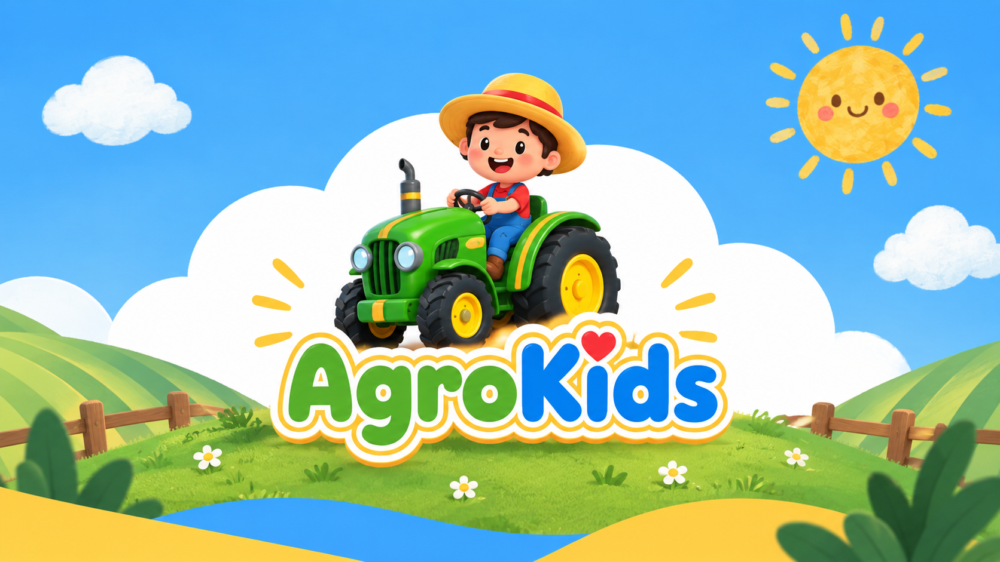
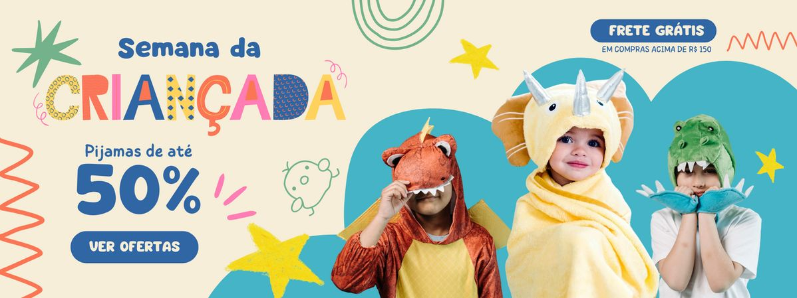
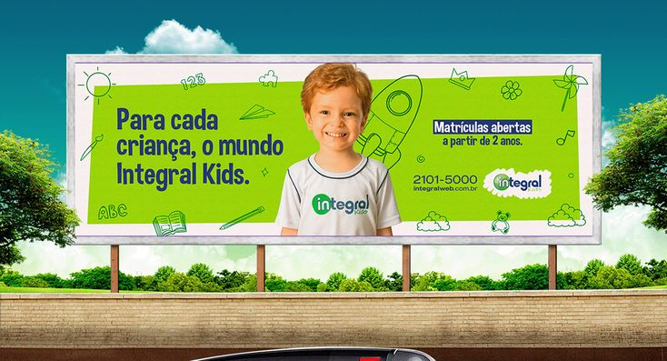
AgroKids - Identidad Visual
Desarrollo de paleta de colores y logotipo lúdico para aplicación móvil y kit de siembra interactivo.
Desliza para ver más ➔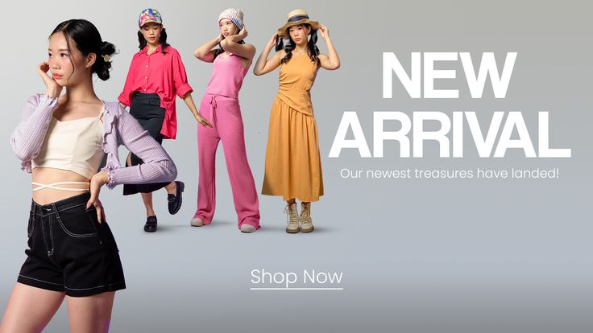
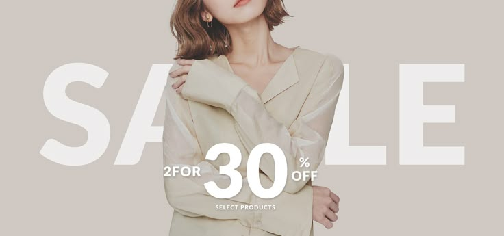
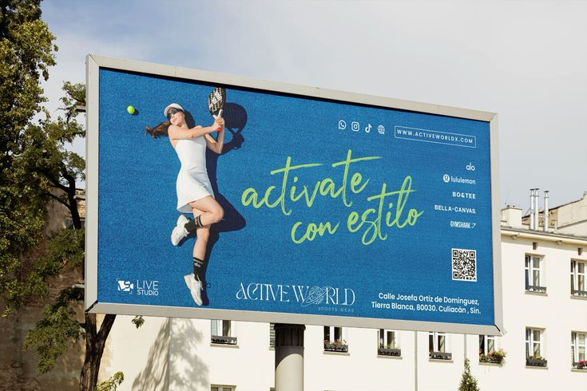
Boutique "El Hilo" - E-Commerce
Rediseño completo de la interfaz de tienda en línea para mejorar la experiencia de compra y aumentar ventas.
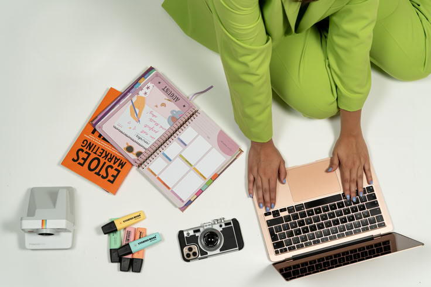
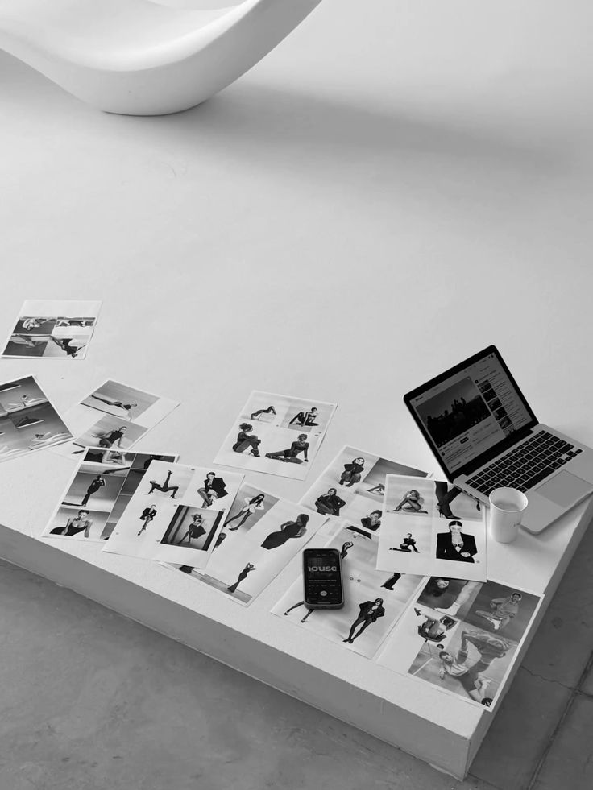
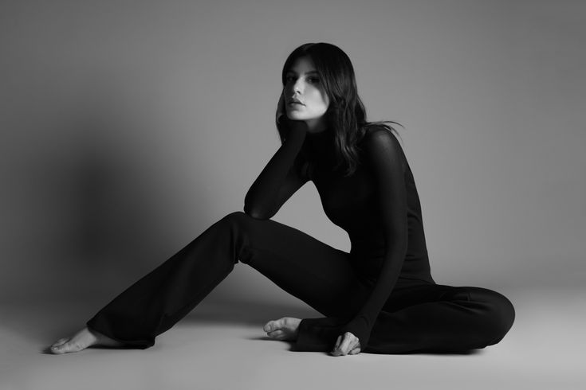
Luz & Sombra Estudio
Creación de manual de identidad corporativa enfocado en el manejo de exposición y composición visual.
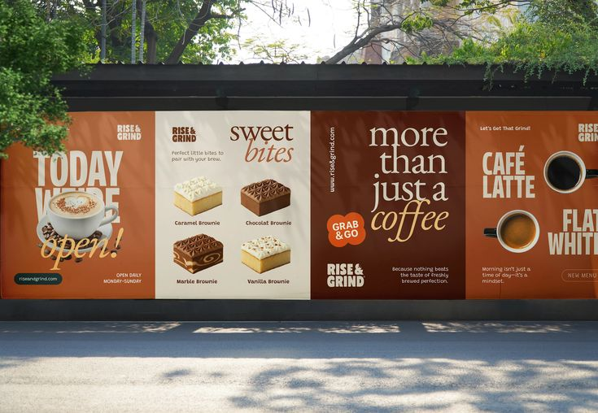
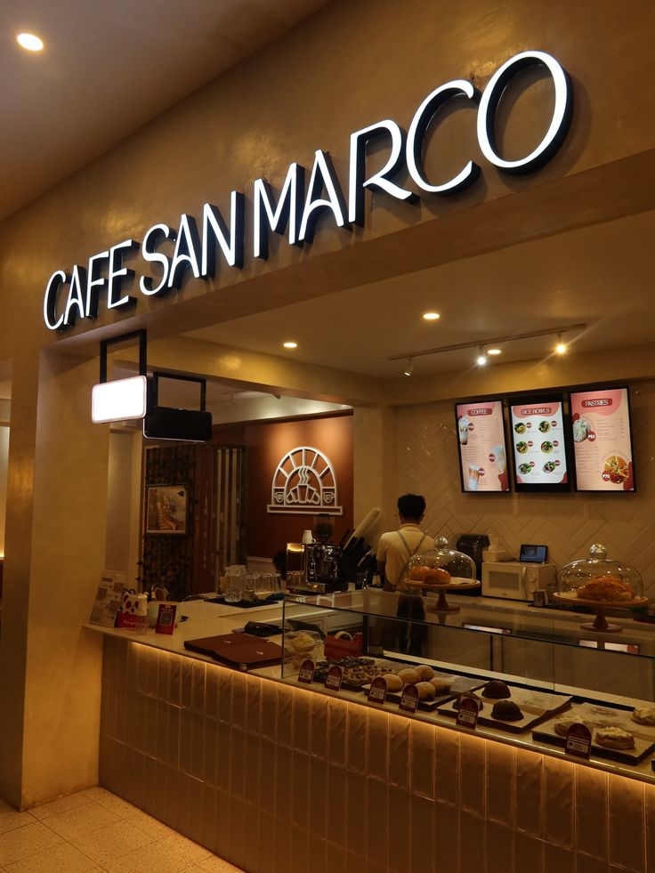
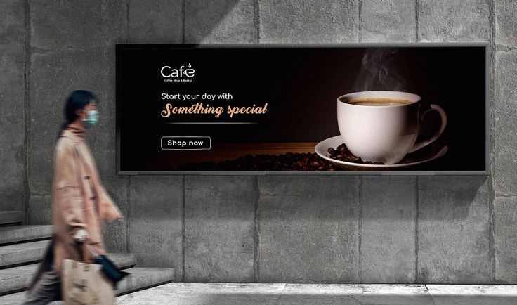
Café San Marcos
Estrategia de branding y diseño de empaques para nueva línea de café tostado en la ciudad.
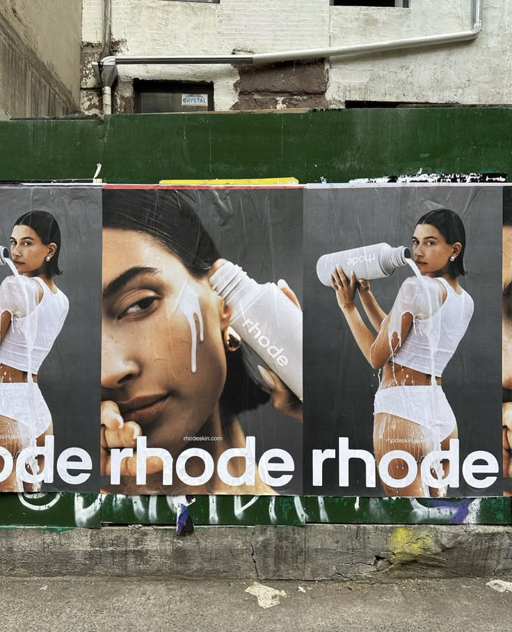
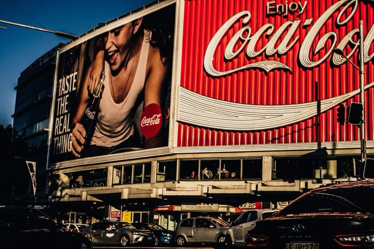
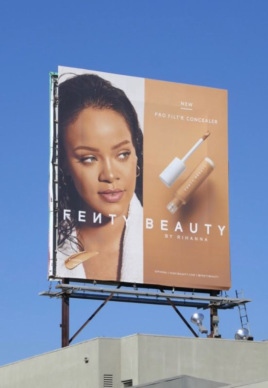
Socios Comerciales
Colaboración directa con marcas líderes para impulsar el desarrollo y la innovación conjunta.
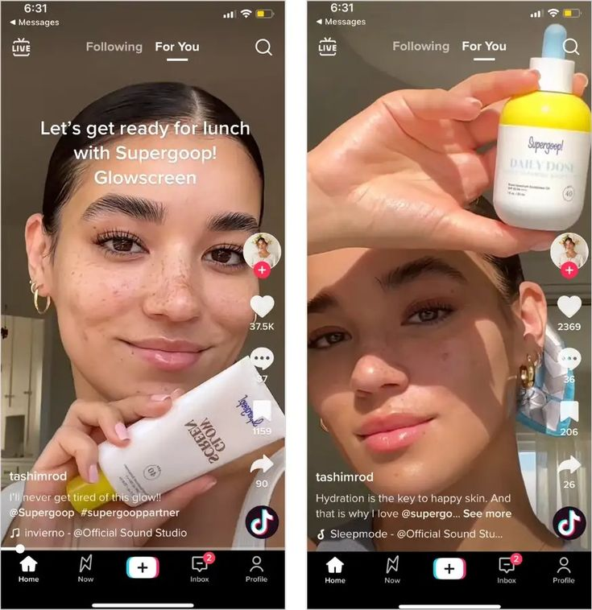
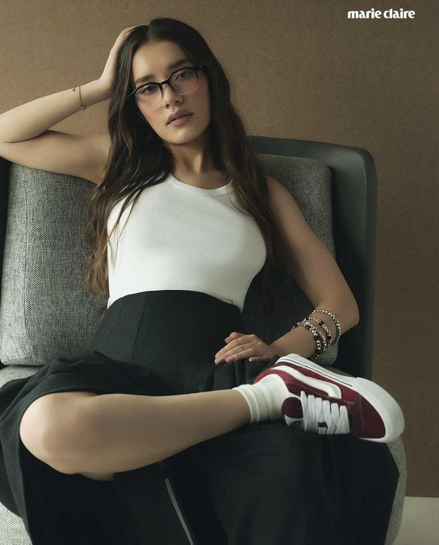
Creadores de Contenido
Colaboración con influencers para promocionar productos y servicios a través de contenido auténtico y atractivo.
Proyectos por Categoría
E-commerce y Tiendas Online
Sistemas y Apps a la Medida
El impacto en números
+150%
Incremento promedio en conversión de tiendas en línea.
100%
Soluciones adaptadas a los procesos operativos del cliente.